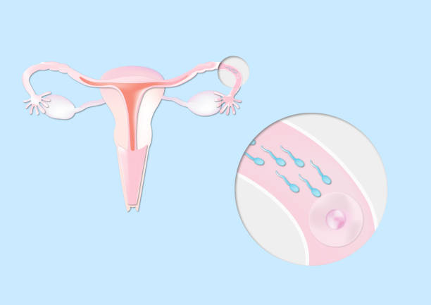

How fertility works
For pregnancy to begin, sperm must fertilise an egg soon after ovulation — the monthly release of a mature egg from an ovary into the fallopian tube.
-
Ovulation timing Wakati wa ovulation
In a 28-day cycle, ovulation usually happens around day 14 (roughly 14 days before the next period). Once released, the egg survives 12–24 hours.
-
Your fertile window Kipindi cha rutuba
Because sperm can survive up to 5 days in the reproductive tract, the 5 days before ovulation plus ovulation day itself are your most fertile days.
-
Body signs of ovulation Ishara za ovulation mwilini
Clear, stretchy cervical mucus, mild one-sided pelvic twinges, and a small rise in waking body temperature after egg release.

Steps when trying to conceive
Track your window
Use cycle tracking or urine ovulation predictor strips to time intercourse every 1–2 days during your fertile window.
Preconception health
Take 400 mcg of folic acid daily before conception, eat balanced meals, avoid tobacco, and limit alcohol.
Know when to check in
Seek an assessment after 12 months of trying (or 6 months if aged 35+), or earlier if cycles are irregular.
Fertility support & treatments
-
Ovulation induction Kuchochea ovulation
Oral medications such as letrozole or clomifene encourage the ovaries to mature and release eggs regularly.
-
Intrauterine Insemination (IUI) Kupandikiza Mbegu za Kiume (IUI)
Prepared sperm is placed gently into the uterus around ovulation to increase the chance of fertilisation.
-
In Vitro Fertilisation (IVF) Urutubishaji wa Nje (IVF)
Eggs are collected, fertilised in a laboratory, and a developing embryo is transferred into the uterus.
Fertility involves both partners
Male factors contribute to roughly a third of fertility challenges. When seeking an evaluation, doctors typically assess both partners so nothing is missed.
Fertility questions
About 84% of couples having regular unprotected sex conceive within 1 year, and around 92% within 2 years. Taking several months is completely normal.
Yes. Egg count and quality gradually decline from the late 20s and more noticeably after age 35, though many women conceive naturally in their late 30s and early 40s.